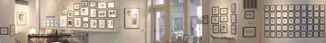

|
> Artists > Christophe Vorlet > Info
Christophe Vorlet

Images | Images 2 | Images 3 | Info

Education
1979 School of Visual Arts, New York, NY
1974-77 Apprenticeship as Graphic Designer
1974-77 Kunstgewerbe Schule Zürich, Switzerland
1973 Vorkurs Kunsgewerbe Schule Zürich, Switzerland
Solo Exhibitions
2006 Swiss Embassy, Washington, D.C.
1995 Galerie Commercio, Zürich, Switzerland
1987 Galerie Commercio, Zürich, Switzerland
1984 Galerie Commercio, Zürich, Switzerland
1983 Galerie Transvertas, Zürich, Switzerland
1980 Galerie Hannibal, Zürich, Switzerland
1979 Galerie Hannibal, Zurich, Switzerland
1978 Galerie Tolgge, Zurich, Switzerland
Group Exhibitions
2006 Piedmont Virginia Community College, VA
2006 'INX' Museum of Caricature and Comic Art, Warsaw, Poland
2005 Les Yeux du Monde, Charlottesville, VA
2004 ‘INX' MCS Gallery, Easton, PA
2004 ‘INX' The Works Gallery, Edmonton, Canada
2004 ‘INX' ‘Fever Lines’, Gallery Nine, The New York Times, NY
2004 ‘INX’, The Micro Museum, Brooklyn, NY
2003 ‘INX' ‘Graphic Social Satire’, Triangle Gallery , Calgary, Canada
2001 ‘INX' St.John’s University, New York, NY
2001 ‘INX Retropective’, Syracuse Universtiy Parsons School of Design, NY
1996 The Target Gallery, Alexandria, VA
1992 ‘INX, Firing LInes - Political Illlustration, 1980-1992’,
National Touring Exhibiton
1988 Galerie Commericio, Zürich, Switzerland
1985 Galerie Commercio, Zürich, Switzerland
1985 Schurterhaus Galerie, Wangen, Switzerland
1984 Galerie Commercio, Zürich, Switzerland
1983 Galerie Walcheturm, Zürich, Switzerland
1982 Kunsthaus Zürich, Zürich, Switzerland
1982 Galerie Commercio, Zürich, Switzerland
1981 Galerie Walcheturm, Zürich, Switzerland
1981 Galerie Commercio, Zürich, Swtizerland
1981 Galerie Rote Fabrik,Zürich, Switzerland
1981 Galerie Casa Nova, Zürich, Switzerland
Commissions
2006 'Trixie & Wiggi', Beatrice Ost, Charlottesville, VA
1999 'Zanotta's Livingroom', Siliva Zanotta, Zürich, Switzerland
1990 ‘Magic Garden’, Matsushita Investment and Develpement
Company by Eric and Deborah Staller in collaboration with
Paul Degen, Enno Wiersma and Mundy Hepburn, Osaka, Japan
1986 Mural, Restaurant Bären, Aarau, Switzlerland
1985 Mural, The London Bar, Zermatt, Switzerland
Collections
2006 Beatrice Ost & Ludwig Kuttner, Charlottesville, VA
1999 Haus der Geschichte der Bundesrepublik Deutschland,
Bonn, Germany
Images | Images 2 | Images 3 | Info
|